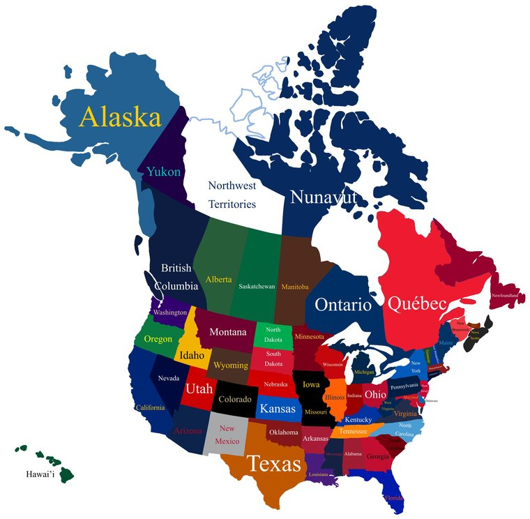

The work is the same work. Wetlands, watersheds, habitat, restoration, GIS — Canada does all of it, often on the same landscapes that cross the border. Your degree and your training transfer.
The only real obstacle is permission to work, and that is more solvable than most people assume. There are three routes. One of them needs no job offer at all.
Canadian jobs are kept behind the 🇨🇦 Canada only filter on the Browse pages, so they never get mixed in with the American ones. Flip that chip to see them.
This is an open work permit. That word is the whole point: it is not tied to one employer. You arrive, and you can take any job you can get — including seasonal field crews, technician work and short contracts, which are almost impossible to land from another country because nobody will sponsor a three-month job.
The catch, and it is a real one: Americans cannot apply for this directly. There is no youth-mobility agreement between the US and Canada the way there is with Australia, Ireland and about thirty other countries. Instead you have to be nominated by a “Recognized Organization” — a body Canada has approved to sponsor people from countries without an agreement.
Canada and the United States agreed that people in certain professions can cross the border to work without the usual hurdles. If your job is on the list and you have the degree, you qualify.
The big advantage is something called being LMIA-exempt. Normally a Canadian employer who wants to hire a foreigner has to run a long, expensive process proving no Canadian could do the job. That requirement is what makes most employers say no before the conversation starts. Under this route they skip it entirely — which makes hiring you dramatically less painful for them. Say this in your cover letter. Most hiring managers do not know it applies to Americans.
These are the listed professions relevant to you. Every one requires only a “Baccalaureate or Licenciatura Degree” — the official wording — with no years of experience attached:
If you do a funded master’s at a Canadian university, you can apply for a work permit when you finish. It is open — no job offer, no employer tied to it — and for a master’s it runs three years.
Federal departments, provincial ministries and Parks Canada are technically open to non-citizens. In practice, citizens and permanent residents get preference, and non-citizens have been around 2.5% of hires. Many federal roles also want French.
Aim at private consultancies and non-profits instead. They hire constantly, they move faster, and they are the ones who handle trade-agreement permits as routine paperwork. Ontario’s conservation authorities sit in between — they are public bodies, so check each posting for a citizenship line before you invest in it.
Canada has two official languages, which makes people assume they need French. For the work you are looking at, in the places you would look, you do not.
| Where | What it actually means for you |
|---|---|
| Most of Canada | English is the working language. Nine provinces and all three territories — no French needed, no disadvantage. |
| Quebec | French is required for most workplaces, and there are laws about the language of work. Skip it unless a posting is explicitly English-language. |
| New Brunswick | Officially bilingual. Plenty of English-language work, but bilingual candidates have an edge for public-facing roles. |
| Federal government | Many positions are designated bilingual. One more reason that route is not the one to chase. |
The weekly search is set to cover English-speaking Canada only, so anything that reaches your list has already passed this filter.
Every one of these sits directly on top of somewhere you already know — British Columbia above Washington, the Prairies above the Dakotas, Ontario across the Great Lakes, and the Maritimes above Maine.

| Region | What the conservation work looks like |
|---|---|
| British Columbia | Forestry, salmon and fisheries, coastal and stream restoration, wildfire recovery. Big consulting sector in Vancouver and Victoria. Expensive to live in. |
| Prairies (AB / SK / MB) | Prairie pothole wetlands — the same duck-factory landscape that runs down into the Dakotas, and the exact system several of your saved American programmes study. Also rangeland and industrial land reclamation. Cheaper to live, strong wetland sector. |
| Ontario | 36 conservation authorities doing wetland permitting, water quality and restoration — the closest Canadian thing to the American state wetland-reviewer jobs. Plus Great Lakes work and the largest consulting market. |
| Atlantic Canada | Coastal and salt-marsh restoration, fisheries, sea-level-rise adaptation. Smaller job market, lower cost of living, easier to stand out. |
| The North (YT / NT / NU) | Permafrost, caribou, mine reclamation, water monitoring. Remote and demanding, but pay is higher and they are used to hiring from away. |